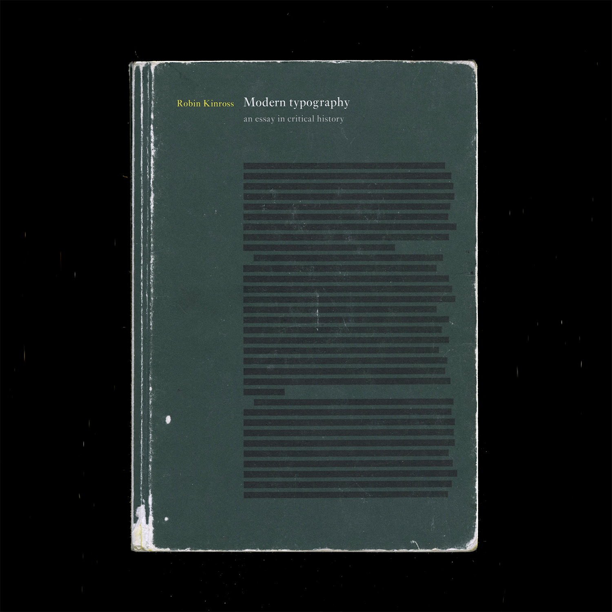
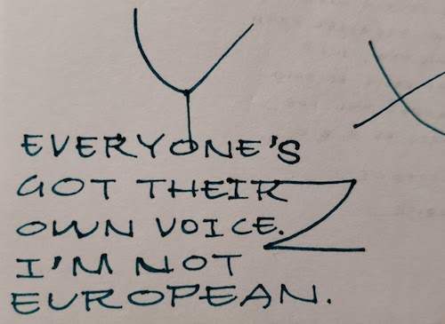

week 9October 19–25
Alexander Tochilovsky, head curator of the Herb Lubalin Study Center, on Lubalin’s convictions and skill, the inaccuracy of Google, and Karl Gerstner’s systems.

WashU’s art library also has a copy of Gerstner’s Designing Programmes. Not sure how I feel about such a rationalized approach quite yet, but this quote,
“The rules of the game is permutation”
— Paul Gredinger, Pro-Programmitic, introduction to Designing Programmes (pg.3)
defines design for me, in regard to how each individual design is made but also how design as a collection evolves. Another interesting perspective is:
“Instead of solutions for problems, programmes for solutions … The creative process is to be reduced to an act of selection. Designing means: to pick out determining elements and combine them.”
— Karl Gerstner
This is how I’ve felt about design. It feels like a big game of collage and synthesis. I’m more interested in working at the more micro/fundamental levels of its existence, like type design (can’t have a lot of design without typography, and can’t have typography without type). Type is just abstract yet just material enough. It sits at such a nice intersection. It really is its own thing.

— RWONG (SHIFT) typeface by June Shin
Each glyph is a hybrid of two characters.

Finished reading Modern Typography but it’s gonna need a second read eventually.
Chapter 6: New traditionalism:
Revivals were a thing because of consumer demand. What do people want now?
Rudolf von Larisch emphasized the importance of spacing over “the subordination of detail to the total effect” (p.76). I can get too finicky with type (as it’s easy to do) too early on. Just like graphic design, you need to start with the lower-fidelity, overall impression of a design before ironing out all the details. Otherwise it gets overwhelming and limiting. It’s also easy to fall into making showy glyphs that don’t quite work with the whole system.
A prevailing philosophy in type design: “writing or (more generally) hand-produced forms should be at the root of all letters for printing. To ignore written forms, as the ‘elemental’ or new typographers tried to do, was thus to discard the very foundations of civilized practice” (F.H. Ehmcke, pg. 77). What’s the relationship of the hand to how letters are made today? It’s at least half-digitally native now for typefaces, so… As long as it is identifiable as an alphabet, it is ‘legible’, as least legible in context. Individual letters may be hard to read, but you can tell when something is a letter, or when something looks like a letter. It’s so odd — letters are completely abstract things but are material representations of phonemes. Oof. Yeah it all started with the pen, but it doesn’t end that way. And it doesn’t have to start with the pen. What really defines an alphabet is the modular system. Repetition and permutation. Letters can be reduced to binary systems, like my CSS typefaces. It stops looking like an alphabet when none of the forms relate to each other. And form in stroke is not the only way to reference the roots of letterform. The alphabet is the alphabet, connecting points and lines. That’s what a stroke is now; not a gesture but a plotting of points.
Chapter 8: New typography:
Those who reject technological advancement are just denying the inevitable. Technology will make its way into everything and affect it; may as well attempt to steer the wheel.
El Lissitzky: “The printed surface transcends space and time. The printed surface, the infinity of books, must be transcended. The electro-library.” (pg.87, originally from “Topografphie der Typographie”). Still not sure what the electro-library is, but maybe it alludes to how text is read has changed. I am also keen on the idea of how type, the material, allows ideas to exist, to be transferred, to be heard, and to persist after its author has passed.
Jan Tschichold: “An extraordinary economy could be achieved through the exclusive use of small letters — the elimination of all capital letters… our script loses nothing through writing in small letters only — but becomes, rather, more legible, easier to learn, essentially more economical. for one sound, for example ‘a’, why two signs: A and a? one sound, one sign. why two alfabets for one word, why double the quantity of signs when half achieves the same?” (pg.88, originally from Elemental Typography). Another reason why the universal alphabet was attempted. Not sure how I feel about the simplification of alphabets either, but Tschichold has a point. I think it all just falls back on applying such an idea to an appropriate context.
Herbert Bayer: “to print a hand-produced letterform with a machine is false romanticism” (p.93, originally from his presentation Versuch einer neuen Schrift). Maybe this is why script typefaces kind of generally irk me.
Chapter 9: Emigration of the modern
H.N. Werkman was a typographer who did “experiments of configuration and of technique, in alliance with subversive content, suggested ‘an aesthetics of resistance’ [(pg.103)] … was shot by German military authorities who, it has been suggested, were provoked by his unorthodox typography” (pg.104). This was during Nazism. Again, stakes were high back then. Jeez.
Tschichold’s criticism of Germany’s new typography: “It seems to me no accident that this typography was practised almost exclusively in Germany and hardly found acceptance in other countries. In particular, its intolerant attitude corresponds to the German inclination to the absolute, its military will to order and claim to sole domination correspond to those terrible components of the German character that unleashed the rule of Hitler and the Second World War.” (said right after the war). “…aesthetic fetish out of efficiency and machine-production … For the worker, machine production has thus meant a heavy, almost deadly loss in the value of experience, and it is entirely wrong to put it on a pedestal… since we are unable to manage without machine production, we must accept its products simply as facts, without worshipping them on account of their origins” (p.108, originally from ‘Glaube und Wirklichkeit’, p.235). Considering the politics of aesthetics and the implications of imitating the form of an era while ignoring its social/political/etc. context.
— what you see is what you get by Cem Eskinazi
Not too profound but nonetheless another way to reveal structure.
I’ve been looking more into the contemporary composer Nico Muhly’s work more after hearing a piece of his premiered at a yMusic concert (in which some Sufjan Stevens songs from Enjoy Your Rabbit were also performed). The song above (Mothertongue: I. Archive) begins with the singer spelling out all of the addresses she has lived at. I didn’t know this before listening the first time, so it sounded like she was singing in code, in recognizable sounds but not recognizable words. Muhly also made an opera about how a boy planned his own murder using internet chat rooms (true story).
Muhly works with my favorite artists (Sufjan Stevens, The National, etc.), is a prolific and diverse composer, and is joyfully and charismatically eccentric. He was even on the podcast Design Matters and has written about fonts on his blog (???). Anyway, the parallels between music composition and type design interest me. Both make material or instruction that is to be interpreted through their use and performance. Muhly is prolific in his work because he is voracious in collaborating and making sure that his work is interpreted and performed in many different contexts, because the music doesn’t mean much if it isn’t performed and heard — this aspect is especially pertinent to music because of how it is materialized: ephemeral sound, a live performance. With type you can look at it with specimen and gather something. Looking at a score is more difficult.
Muhly has an understanding of musicians and their instruments, so he is able to write for them better. Type designers also need to understand how their type is used but also who they are making type for.
Muhly wrote an article on his process, and he touched on an issue he had during his days at Julliard:
“I constantly had hundreds of tiny, brilliant ideas, each lasting about five seconds, and instead of learning to use them, I’d just throw them at the wall in some order and the result would be a sparkling and disorganised mess, a free-form string of disjointed but attractive thoughts. My teacher set out to fix this problem, and taught me a method of planning I still use to this day.”
I am having the same problem with type design (and other design too). The ideas are endless but I am having trouble sticking to one and executing it thoroughly. It’s because I don’t really know what I’m doing, but I really want to make the thing. I need more structure and guidance but not too much — I need room to make mistakes, to learn the hard way, because there seems to be something about failing and learning that is more truthful than following advice that may just be convention. Muhly elaborates on how he became more structured in writing:
“With every piece, no matter its forces or length, the first thing I do is to map out its itinerary, from the simplest, bird’s-eye view to more detailed questions: what are the textures and lines that form the piece’s musical economy? Does it develop linearly, or vertically? Are there moments of dense saturation – the whole orchestra playing at once – and are those offset by moments of zoomed-in simplicity: a single flute, or a single viola pitted against the timpani, yards and yards away?”
He talks about the itinerary in another interview: “It’s less a question of having a story and more having an itinerary.” What he means is that thinking of a concept is half the problem; it’s the process of making it that is just as crucial. Methodology. The narrative can only guide so much.
In another interview, Muhly talks about focusing on the day-to-day act of creating and the process of creation as home, which is how I felt making type this summer:
“By not worrying about what anything means (as about [musicals versus operas], above), I find that a day can be spent just in the joy and rigour of work. The process — the journey, as it were — is itself home!”
In the same interview he also just talks about how creation itself is the driving motivator, not its philosophical meanings or whatever else:
“I fear that the minute I figure it out, I’ll forget how to do it, so I always just try to keep my eye on the task at hand. One thing is that I am fiercely unambitious. I have never made a plan that has anything to do with my career, or my ‘trajectory’ or whatever euphemistic phrase I’m meant to use. Instead, I work — not to repeat the word — vigorously on everything, so that the work itself is the ambition. It’s never, ‘in ten years I wish to have accomplished these things and will tick off the boxes as I go.’”
Things started going a bit hairy last year when Pro Practices started and questions of “Where do you want to go? What do you want to do?” and models of success were presented. Before I was just doing the best to my ability and following intuition without letting consciousness block creation. And then when the time would come on where to go, I’d be prepared simply because of my work. I came into the program just wanting to make meaningful things. Simple. Even if I tripped up design wise I was still able to keep going without hesitation. Once these future pressures and templates for behavior were presented, I just got lost. The work stopped being the guiding factor. All of it seemed to be made for a purpose that was not mine.
Really I entered in because my interest in type was overwhelming and unignorable — I honestly didn’t really know what graphic design meant. I’ve clarified that it’s not necessarily graphic design that I want to make. It’s about materializing ideas. And it seems that my way of doing that is through language and words, less so image. And this is where the artist vs. designer debate starts.
One more thing: the idea of “musical citizen” over “solitary genius writing in a hut somewhere”.


— Standard and Pickle-Standard by the whacko-type designer Benoit Bodhuin
It’s grid based and great.
The e in Eames Century Modern by Erik van Blokland: no definitive right and wrong, just convention and context.



— Seh-Texte by Ferdinand Kriwet (1962), part of concrete art. Picture from IDEA: typography today.
The Herb Lubalin Study Center has all the Dot Dot Dot magazines, a lot of the IDEA mags, and Emigre publications—another reason why 2 hours there is not enough time.
In Emigre 67 Rudy VanderLans interviews the type designer, writer, publisher, educator Peter Bil’ak. Bil’ak talks about the design and ideation process of making Dot Dot Dot and about why he makes type:
“It’s a constant oscillation between intuition and intellect, never just one or the other.”
— Peter Bil’ak, unedited interview here
“[Fedra (a typeface by Bil’ak)] is not directly repeating the past, nor is it predicting future trends. It is simply the product of now.” What makes a typeface contemporary? It’s not definable. It just is.
Right now I am kind of scattered. When I think too much, I stop doing. But when I feel like I am not thinking enough, I don’t feel as intentional, rational, purposeful. Every doing is a decision informed by something, but it doesn’t take much for me to slip into conscious thinking. I can really only articulate what I’ve done after I’ve done it. Trying to define it before it’s made sets these limiting, somewhat impossible limitations. It’s basically trying to predict the future when really what matters is what you’re doing now. This idea of emergence used to be pretty natural to me but it’s been getting a little harder and harder because of the pressures of the future. Too much future. Not enough now.
What I’m starting to learn through the interaction capstone is to follow the essence of a form rather than trying to shape it to be something else. It’s been more about expanding and resolving a form rather than solving a problem, which is a nice way of working, especially when you consider the purpose and possibility of an educational environment in comparison to a commercial/professional one.
One thing about type design that Ben Kiel told me (that Tal Leming originally told him) is that the type will reach a point where it starts to speak. The form itself will lead the way. It’s kind of mysterious, but makes a lot of sense after it happens. It’s not a conscious, fully articulable thing in the moment. And it’s kind of how my whole life has panned out basically. You start out with a plan but it can never be determined completely.
So there’s always been this emphasis on process over outcome, but even that is starting to become fuzzy. It’s a tricky balance.
Maybe it’s just all too much thinking, not enough making. Easier to observe what can be seen. Or to just not criticize too much in the moment of making but after the thing is made to exhaustion. Of course that was easier when I didn’t know as much about design or how to talk about it. Ignorance is bliss.
I guess the approach I need to take is to just make, as I used to, without thinking too much about the why and the intent in the beginning. As much as that may seem to oppose Rationalization and Logic of design, I think it’s more honest to say that a good chunk of meaning and reason comes of out interpreting a thing after it’s made, after we can step out of the context of its making and view it afterward. I mean, that’s what a crit is. I don’t know. Maybe this is all a weird kind of performance anxiety. Things just always go better when I just go my own way and make stuff without outside expectation.
“In the workshop it is the moment that speaks and not the artisan.”
For bookbinding we went to Special Collections. I encountered Botnick’s Diderot for the third time in person, but this time I had the opportunity to actually read some of it more closely.
Every time I thumb through that thing I always leave with a dose of vigor. It’s like all the time and energy that Botnick and others put into the book is being transferred to whomever touches it. The act of making such a book is in itself beautiful. The devotion and conviction to a crafted object and to language is the purest goal.